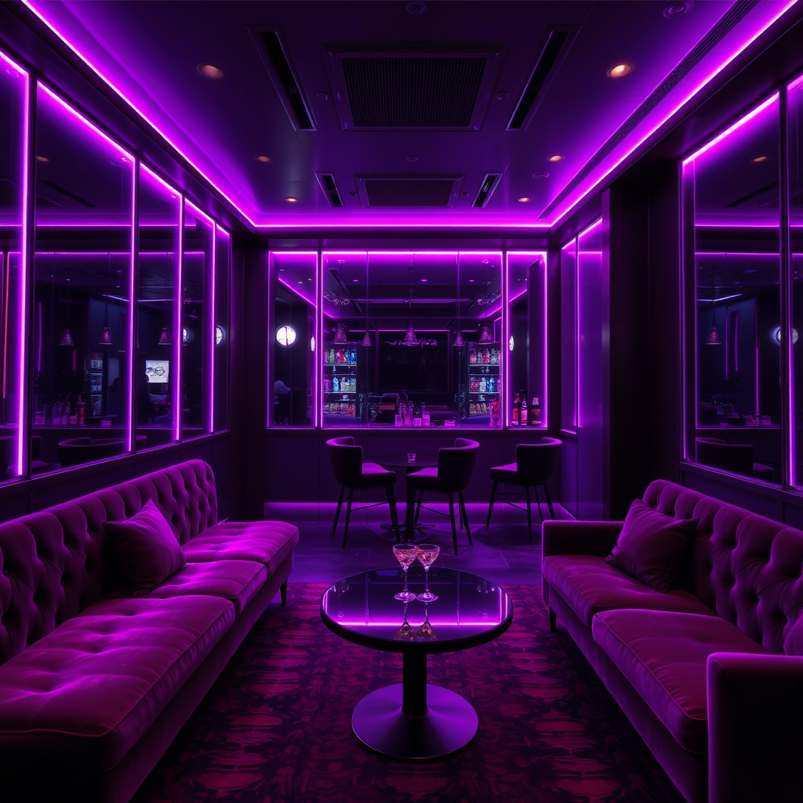

前言：叫傳播前，先把行情搞清楚！
每次叫傳播最怕什麼？最怕被當冤大頭！價格亂喊、費用不清不楚，結帳時才發現比預期貴好幾倍。這種經驗相信不少人都有過對吧？
身為在傳播業界打滾多年的「行家」，今天我要把2026年台北傳播收費行情完整公開！從最基本的KTV傳播，到飯局妹、汽車旅館傳播，各類型的費用標準一次說清楚。
看完這篇，你會知道：傳播收費行情怎麼看、不同等級的合理價位、各家傳播公司的報價差異、以及如何避免被坑。建議收藏起來，以後叫傳播前拿出來參考！
💡 先說結論
2026年台北傳播行情：普通級 2500-3500元，精選級 3500-5000元，頂級 5000-8000元+。低於這個行情太多要小心有鬼，高於太多可能是被當盤子！
2026年台北傳播三種等級收費行情
台北傳播公司的收費標準，主要以等級區分。等級越高，代表外型條件越好、服務品質越佳，收費自然也越高。以下是2026年最新的行情價格：
1. 普通級：2500-3500元（入門首選）
普通級是很多第一次接觸傳播服務的人的首選。這個等級的價格最親民，適合：
- 學生族群、小資族，預算有限但想體驗傳播服務
- 朋友聚會、唱歌局，不需要太高的規格
- 純聊天、唱歌為主，不要求太多特殊服務
普通級的傳播妹，外型條件中等，但親和力通常不錯。她們能陪你唱歌、喝酒、聊天，帶動包廂氣氛沒問題。CP值最高的入門選擇！
2. 精選級：3500-5000元（市場主流）
精選級是台北傳播市場的主流消費區間，也是最多人選擇的等級。這個價位的傳播妹通常是：
- 外型中上，有一定顏值
- 大學生、上班族兼職，或是有一年以上的服務經驗
- 會唱歌、會喝酒、會帶遊戲，能炒熱氣氛
精選級的傳播小姐服務品質穩定，適合各種場合：慶生、公司聚會、朋友聯誼、商務應酬都可以撐場面。如果你不確定要選哪個等級，選精選級就對了！
3. 頂級：5000-8000元以上（尊榮享受）
頂級是各大傳播公司的最高規格，代表最頂尖的外型條件和服務品質。適合：
- 重要商務應酬，需要給客戶留下好印象
- 特殊紀念日，想給另一半難忘的體驗
- 追求最高品質，不在乎多花錢
頂級傳播妹可能是模特兒、網紅等級，或是業界資深的王牌小姐。她們懂得察言觀色，知道什麼場合該怎麼表現，能讓你在客戶面前加分不少。

2026台北傳播行情透明公開，選對等級不花冤枉錢
不同服務類型的傳播收費差異
除了等級之外，服務類型也會影響收費。以下是各種常見傳播服務的行情參考：
| 服務類型 | 大概費用 | 適合場合 | 注意事項 |
|---|---|---|---|
| KTV傳播 | 2500-8000元 | 唱歌聚會、慶生 | 以小時計費，含包廂費另計 |
| 飯局妹 | 3000-10000元 | 商務餐敘、家庭聚會 | 以場次計算，含車資補貼 |
| 汽車旅館傳播 | 5000-12000元 | 私人約會、休息 | 含場地費，時間彈性 |
| 一對一服務 | 4000-15000元 | 私人陪伴 | 時間彈性，服務內容可商量 |
KTV傳播收費行情分析
KTV傳播是最常見的服務類型，也是最多人使用的消費場景。讓我來分析一下KTV傳播的收費構成：
基本費用組成
KTV傳播的費用通常包含：
- 小姐服務費：根據等級，2500-8000元不等
- 包廂費：依時段、人數，500-2000元不等
- 酒水費用：視消費量，1000-5000元不等
- 小費：可給可不給，視滿意度，500-2000元
各時段行情差異
KTV傳播的價格會因為時段而波動：
- 下午場（14:00-18:00）：價格較便宜，通常是原價的7-8折
- 晚場（18:00-22:00）：正常價格，熱門時段
- 深夜場（22:00-02:00）：可能加價，週末節日更貴
- 凌晨場（02:00後）：特殊時段，價格最高
飯局妹收費行情分析
飯局妹的收費模式和KTV傳播不同，主要以場次計算而非時間。飯局妹適合：
- 商務餐敘，需要有人撐場面
- 家庭聚會，需要氣氛調劑
- 私人招待，客戶或重要人士
飯局妹的收費行情大概在3000-10000元之間，視等級、時間長短、地點遠近而定。
汽車旅館傳播收費行情
汽車旅館傳播是最隱私的服務方式，適合想要完全不受打擾的場合。費用組成包括：
- 小姐服務費：依等級，4000-10000元
- 汽車旅館房費：依汽車旅館等級，1500-5000元
- 額外服務費：視內容，可能另計
⚠️ 重要提醒
汽車旅館傳播的費用變動最大，不同店家、不同時段、不同服務內容都會影響最終價格。強烈建議事先確認所有費用，避免結帳時產生糾紛。
傳播收費行情常見問題解析
Q1：為什麼同一個等級，不同傳播公司報價差很多？
這是正常現象！每家傳播公司的定價策略不同：大型連鎖傳播公司因為有品牌加持，價格通常較高；小型或新開的傳播公司可能用低價吸引客人；有些公司包含酒水，有些要另計；服務品質、售後保障也會反映在價格上。
Q2：行情價以下的傳播公司可以選嗎？
可以，但要特別小心。低於行情太多的可能原因：品質不佳、照片造假、隱藏費用、新手小姐缺乏經驗、安全性存疑。建議選擇價格透明、在行情區間內的傳播公司。
Q3：可以殺價嗎？
傳播服務不是傳統市場喊價，不建議殺價。殺價可能導致服務品質下降、傳播小姐配合度降低。與其殺價，不如找評價好、價格公道的傳播公司長期合作。
Q4：小費怎麼給？給多少？
小費是看滿意度決定，不是強制的。參考標準：普通服務500-1000元，滿意服務1000-2000元，非常滿意2000-3000元以上。如果你真的很滿意，小費是對傳播小姐的肯定。
常見問題 FAQ
Q1：2026年台北傳播收費行情是多少？
台北傳播收費行情：普通級約2500-3500元，精選級約3500-5000元，頂級約5000-8000元以上。實際費用依傳播公司、等級、地點而異，建議事先詢問清楚。
Q2：KTV傳播和飯局妹的收費有什麼不同？
KTV傳播以小時計費，適合包廂聚會；飯局妹則以場次計算，適合商務餐敘。兩者服務模式不同，收費標準也不同。飯局妹通常會有交通補貼費用。
Q3：汽車旅館傳播的行情大概多少？
汽車旅館傳播費用較高，包含小姐服務費加上汽車旅館場地費，整體消費約5000-12000元不等，視選擇的等級、汽車旅館等級和服務內容而定。
Q4：叫傳播除了基本費用還有什麼隱藏費用？
常見額外費用包括：酒水費用、小費、加班費、交通費、場地費等。建議事先跟傳播公司確認所有費用明細，避免結帳時產生糾紛。
Q5：如何判斷傳播收費是否合理？
選擇有透明收費標準的傳播公司，比較市場行情，避免價格過低或過高。優質傳播公司的收費會在合理區間內，並提供完善的服務保障。
Q6：傳播費用可以用LINE Pay或信用卡支付嗎？
大多數傳播公司以現金交易為主，部分支援行動支付。建議詢問各家傳播公司的付款方式，並準備足夠現金以確保交易順利。
結語：了解行情，才能放心消費
這篇2026年台北傳播收費行情攻略，把業界不會主動告訴你的秘密全部公開了。看完這篇，你應該能：
- 了解各等級的合理收費區間
- 知道不同服務類型的行情差異
- 避免被當冤大頭
- 選擇適合自己的傳播服務
記住，一分錢一分貨。太便宜的傳播公司可能藏有陷阱，太貴的可能在削你。選擇價格透明、評價好的傳播公司，才能確保你的消費權益。
歐巴傳播致力於提供價格公道、服務優質的傳播體驗。如果你還有任何關於傳播收費的問題，歡迎隨時聯繫我們！